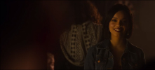
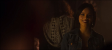

Escenas principales
A lo largo del episodio hay escenas que son cruciales en la historia
 

Paleta cromática
Durante el episodio podemos ver que hay colores que predominan en las escenas
Ambientación
La ambientación y los escenarios de este espisodio son muy particulares